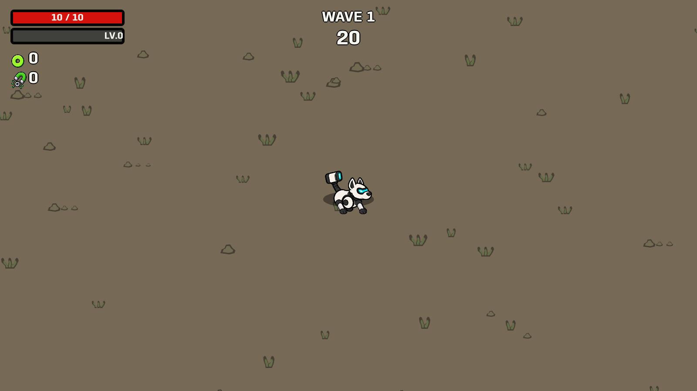
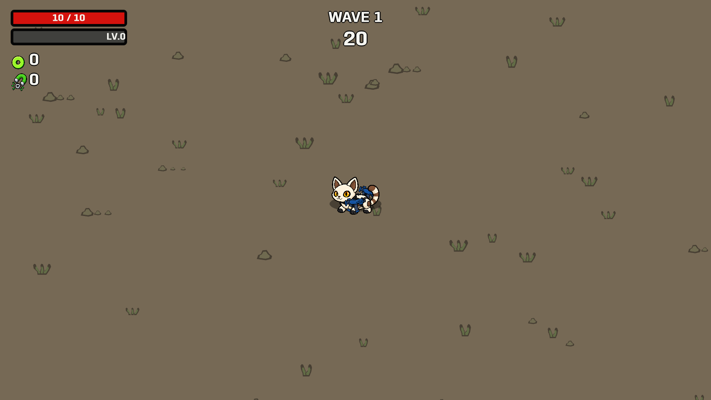
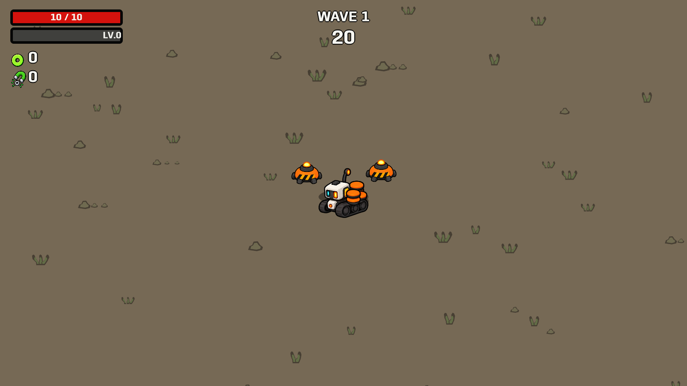
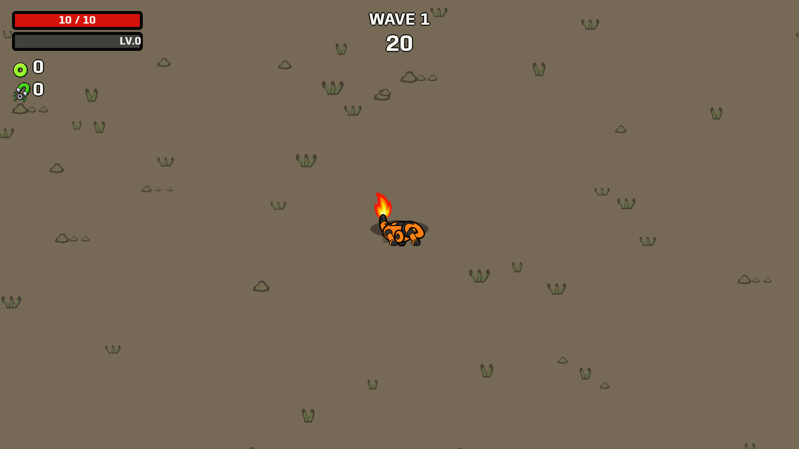
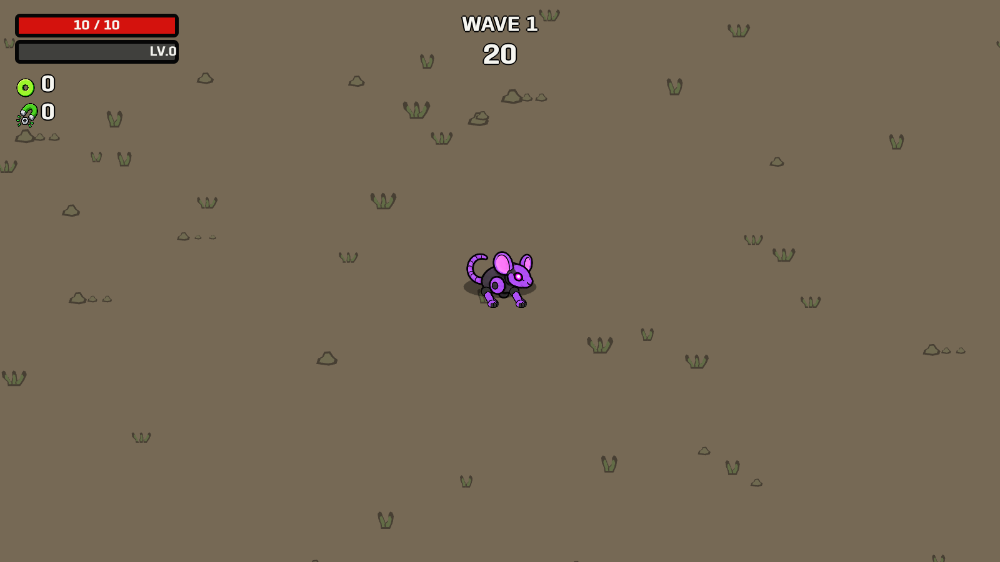
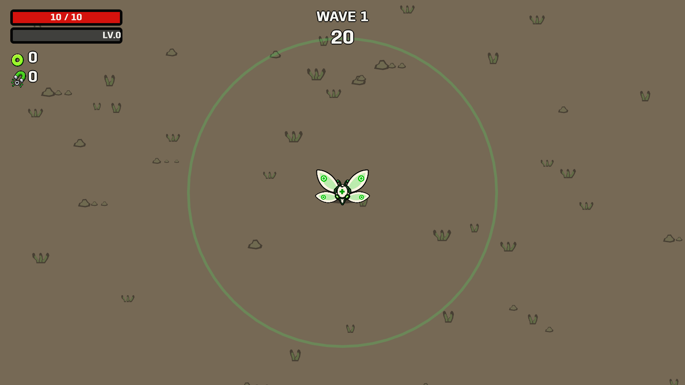
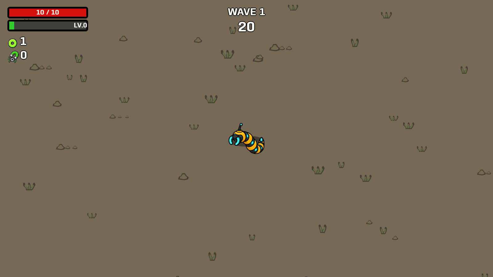
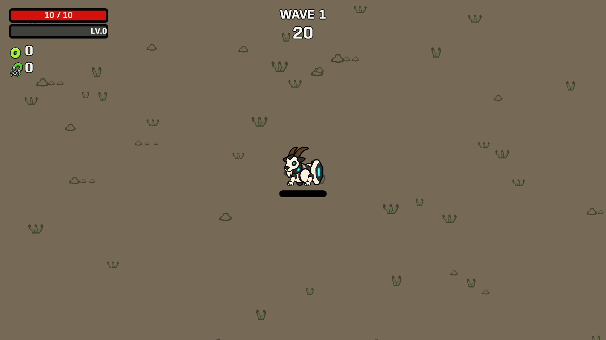
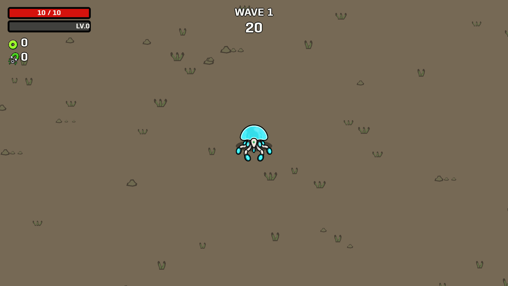

Reference-based combat corrections: visible cat paws, separate aiming guns, duplicate-pet targeting, healing zones, tree-seeking Lootworm and pressure-triggered mines.
27 native behavior checks passed. These are enlarged, staged captures; combat effects and targets are hidden after their checks so the support artwork is visible.
Behavior results · Launch playable support preview








